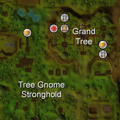
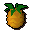
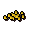
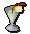
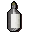
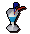
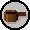
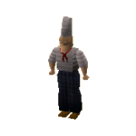
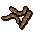

")
Cooking - Flavours of the Gnome Lands
Introduction

If you are interested in finding out more about the art of cocktail making and gnome baking, you will need to take a trip to the Grand Tree. Once there, speak with either Blurberry for cocktail tutoring, or Aluft Gianne Snr. for gnomish food.
They will both help you create your own gnome recipes, or you can buy them pre-made if you came for a taster.
Gnome Cocktails

As a small job, or training for the gnome restaurant and delivery service, Blurberry will teach you the gnomish methods of making cocktails.
If you fail to make a successful cocktail or mis-use an ingredient you can get more from Heckel Funch's store, located to the west of Blurberry.
To make gnome cocktails, you will need to have a cocktail shaker, an empty glass, your ingredients and a knife, which may come in handy as you usually need to slice fruit to finish your concoction off.

As shown here, if you have the ingredients to make the first step of the cocktail, the picture of that cocktail will light up. If you hover your mouse over cocktails you cannot make, it will show you what ingredients you need to make it. Again, you can see that each ingredient is lit up, showing that you have enough to make the cocktail. When you are ready, simply click the lit picture of the cocktail to shake the shaker!
As you do this, you will see a message saying what you need to do to finish this off. This can be anything from slicing a piece of fruit to heating the cocktail up. When you have the sliced fruit or final ingredient(s), simple 'pour' the shaker into an empty cocktail glass to finish the drink off.
| Cocktail | Cooking Level |
Ingredients | To finish | Experience | ||||||||
Fruit Blast |
6 |
 Pineapple |
x 1 | ![[image]](../../img/main/kbase/items/food/other/lemon.gif) Lemon |
x 1 | ![[image]](../../img/main/kbase/items/offspring/orange.gif) Orange |
x 1 | ![[image]](../../img/main/kbase/items/food/other/lemon_slice.gif) Sliced lemon |
50 | |||
![[image]](../../img/main/kbase/items/food/drink/pineapple_punch2.gif) Pineapple Punch |
8 |
Pineapple |
x 2 | Lemon |
x 1 | Orange |
x 1 | ![[image]](../../img/main/kbase/items/food/other/lime_chunks.gif) Lime chunks |
 Pineapple chunks |
![[image]](../../img/main/kbase/items/food/other/orange_slice.gif) Sliced orange |
70 | |
|  Wizard Blizzard |
18 |
 Vodka |
x 2 | ![[image]](../../img/main/kbase/items/food/drink/gin.gif) Gin |
x 1 | Orange |
x 1 | Pineapple chunks |
![[image]](../../img/main/kbase/items/food/other/lime_slice.gif) Sliced lime |
110 | ||
![[image]](../../img/main/kbase/items/food/other/lime.gif) Lime |
x 1 | Lemon |
x 1 | |||||||||
![[image]](../../img/main/kbase/items/food/drink/short_green_guy2.gif) Short Green Guy |
20 |
Vodka |
x 1 | Lime |
x 3 | Sliced lime |
![[image]](../../img/main/kbase/items/misc/equa_leaves.gif) Equa leaves |
120 | ||||
|  Drunk Dragon |
32 |
Vodka |
x 1 | Gin |
x 1 | ![[image]](../../img/main/kbase/items/offspring/dwellberries.gif) Dwellberries |
x 1 | Pineapple chunks |
![[image]](../../img/main/kbase/items/food/other/pot_of_cream.gif) Cream |
 Heat |
160 | |
![[image]](../../img/main/kbase/items/food/drink/choc_saturday2.gif) Chocolate Saturday |
33 |
![[image]](../../img/main/kbase/items/food/drink/whisky.gif) Whisky |
x 1 | Equa leaves |
x 1 | ![[image]](../../img/main/kbase/items/food/drink/bucket_of_milk.gif) Milk |
x 1 | ![[image]](../../img/main/kbase/items/food/other/chocolate_dust.gif) Chocolate dust |
Cream |
Heat |
170 | |
![[image]](../../img/main/kbase/items/food/other/chocolate_bar.gif) Chocolate bar |
x 1 | |||||||||||
Blurberry Special |
37 |
Vodka |
x 1 | ![[image]](../../img/main/kbase/items/food/drink/brandy.gif) Brandy |
x 1 | Gin |
x 1 | ![[image]](../../img/main/kbase/items/food/other/orange_chunks.gif) Orange chunks |
![[image]](../../img/main/kbase/items/food/other/lemon_chunks.gif) Lemon chunks |
Sliced lime |
180 | |
Orange |
x 1 | Lemon |
x 2 | Equa leaves | ||||||||
Gnome Delicacies

Gianne's Restaurant is located on the first floor of the Grand Tree.
As a small job, or training for the gnome restaurant and delivery service, Gianne will teach you how to make gnome cuisine.
If you fail to make a successful item of food or mis-use an ingredient you can get more from Hudo's grocery store located to the north of Gianne.
To make gnome food, you will need Gianne dough, the main ingredient used to bake all of the delicious gnomish foods found in Gianne's cookbook. It can be bought from Grand Tree Groceries, on the second floor of the Grand Tree. It is also worth buying a batta tin, crunchy tray and gnomebowl mould while you are there, too.
When you have your ingredients, decide what you want to make and use the Gianne dough with the cooking tin/tray/mould. You will then need to bake this in an oven. Now you have a 'prepare' option on the item so far. Clicking this launches the following interface where you can select the item you wish to cook.

As you do this, you will see a message saying what you need to do to finish the item off. This usually involves Cooking it once more, then adding the finishing touches, be it gnome spices or toad legs.
The Crunchies
For each of the below, you will first need to use Gianne dough with a crunchy tray and bake it on a range.
| Crunchy | Cooking Level |
Ingredients | Bake, then add: | Experience | ||||||
![[image]](../../img/main/kbase/items/food/baked/toad_crunchies2.gif) Toad crunchies |
10 |
![[image]](../../img/main/kbase/items/secondary_ingredients/toadleg.gif) Toad legs |
x 2 | ![[image]](../../img/main/kbase/items/misc/spicepot.gif) Gnome spice |
x 1 | Equa leaves |
100 | |||
![[image]](../../img/main/kbase/items/food/baked/spicy_crunchies2.gif) Spice crunchies |
12 |
Equa leaves |
x 2 | Gnome spice |
x 1 | Gnome spice |
100 | |||
![[image]](../../img/main/kbase/items/food/baked/worm_crunchies2.gif) Worm crunchies |
14 |
Equa leaves |
x 1 | Gnome spice |
x 1 |  King worm |
x 2 | Gnome spice |
100 | |
![[image]](../../img/main/kbase/items/food/baked/chocchip_crunchies2.gif) Choc chip crunchies |
16 |
Chocolate bar |
x 2 | Gnome spice |
x 1 | Chocolate dust |
100 | |||
The Battas
For each of the below, you will first need to use Gianne dough with a batta tin and bake it on a range.
| Batta | Cooking Level |
Ingredients | Bake, then add: | Experience | ||||||
![[image]](../../img/main/kbase/items/food/baked/fruit_batta2.gif) Fruit batta |
25 |
Orange chunks |
x 1 | Lime chunks |
x 1 | Pineapple chunks |
x 1 | Gnome spice |
150 | |
Equa leaves |
x 4 | |||||||||
![[image]](../../img/main/kbase/items/food/baked/toad_batta2.gif) Toad batta |
26 |
Equa leaves |
x 1 | ![[image]](../../img/main/kbase/items/food/other/cheese.gif) Cheese |
x 1 | Toad legs |
x 1 | 152 | ||
Gnome spice |
x 1 | |||||||||
![[image]](../../img/main/kbase/items/food/baked/worm_batta2.gif) Worm batta |
27 |
Gnome spice |
x 1 | King worm |
x 1 | Cheese |
x 1 | Equa leaves |
154 | |
![[image]](../../img/main/kbase/items/food/baked/vegetable_batta2.gif) Vegetable batta |
28 |
![[image]](../../img/main/kbase/items/offspring/tomato.gif) Tomato |
x 2 | ![[image]](../../img/main/kbase/items/offspring/onion.gif) Onion |
x 1 | ![[image]](../../img/main/kbase/items/offspring/cabbage.gif) Cabbage |
x 1 | Equa leaves |
156 | |
Dwellberries |
x 1 | Cheese |
x 1 | |||||||
![[image]](../../img/main/kbase/items/food/baked/cheesetom_batta2.gif) Cheese and tomato batta |
29 |
Tomato |
x 1 | Cheese |
x 1 | Equa leaves |
158 | |||
The Bowls
For each of the below, you will first need to use Gianne dough with a gnomebowl mould and bake it on a range.
| Batta | Cooking Level |
Ingredients | Bake, then add: | Experience | |||||||
![[image]](../../img/main/kbase/items/food/baked/worm_hole2.gif) Worm hole |
30 |
King worm |
x 4 | Onion |
x 2 | Gnome spice |
x 1 | Equa leaves |
170 | ||
![[image]](../../img/main/kbase/items/food/baked/vegetable_ball2.gif) Vegetable ball |
35 |
Onion |
x 2 | ![[image]](../../img/main/kbase/items/offspring/potato.gif) Potato |
x 2 | Gnome spice |
x 1 | Equa leaves |
175 | ||
![[image]](../../img/main/kbase/items/food/baked/tangled_toads_legs2.gif) Tangled toads' legs |
40 |
Toad legs |
x 4 | Cheese |
x 2 | Equa leaves |
x 2 | 185 | |||
Gnome spice |
x 1 | Dwellberries |
x 1 | ||||||||
![[image]](../../img/main/kbase/items/food/baked/chocolate_bomb2.gif) Chocolate bomb |
42 |
Chocolate bar |
x 4 | Equa leaves |
x 1 | Cream (x2) |
Chocolate dust |
190 | |||

More articles in
Cooking
|
|
|
Further Help
If this article does not help you, you may find the following sections of the RuneScape site helpful:
|
|